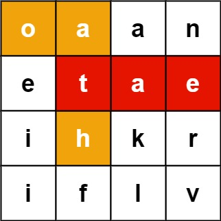
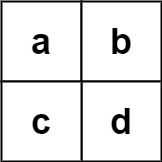

212. 单词搜索 II
单词全插字典树，网格上 DFS 的每一步都沿树走：前缀断了立刻剪；找到词就置空去重，走完摘掉空分叉。
思路
- 把
words全部插进字典树：网格 DFS 每走一步同时沿树走一步，前缀不在树里就整条剪掉。 - 走到
word != null的结点：收进结果并置空，保证同一个词不重复加入。 - DFS 前把格子改成
#占住，回溯时改回来；邻居遇#不走，保证一格一次只用一次。 - 回溯后若分叉下已无单词（无孩子），把它从树上摘掉——剪枝关键，大数据不超时靠它。
图解
最优解
1import java.util.*;2 3class Solution {4 // 字典树结点：son[c] 指向下一个字母；word 不为空说明走到这里恰好是完整单词5 private static class Node {6 Node[] son = new Node[26];7 String word;8 }9 10 public List<String> findWords(char[][] board, String[] words) {11 Node root = new Node();12 for (String w : words) { // 所有单词先插进字典树13 Node p = root;14 for (char c : w.toCharArray()) {15 if (p.son[c - 'a'] == null) p.son[c - 'a'] = new Node();16 p = p.son[c - 'a'];17 }18 p.word = w;19 }20 List<String> ans = new ArrayList<>();21 for (int i = 0; i < board.length; i++)22 for (int j = 0; j < board[0].length; j++)23 dfs(board, root, i, j, ans);24 return ans;25 }26 27 // 从格子 (i,j) 出发沿字典树走：p 是「当前前缀」对应的结点28 private void dfs(char[][] b, Node p, int i, int j, List<String> ans) {29 char c = b[i][j];30 Node next = p.son[c - 'a'];31 if (next == null) return; // 前缀不在任何单词里，整条路剪掉32 b[i][j] = '#'; // 占住格子：本条路径不再走它33 if (next.word != null) { // 走到这里恰好是完整单词34 ans.add(next.word);35 next.word = null; // 置空去重：同一个词不会加两次36 }37 int[][] dirs = {{1, 0}, {-1, 0}, {0, 1}, {0, -1}};38 for (int[] d : dirs) {39 int x = i + d[0], y = j + d[1];40 if (x >= 0 && x < b.length && y >= 0 && y < b[0].length && b[x][y] != '#')41 dfs(b, next, x, y, ans);42 }43 b[i][j] = c; // 回溯：把格子还给其他路径44 if (empty(next)) p.son[c - 'a'] = null; // 分叉下面已无词可找，摘掉45 }46 47 private boolean empty(Node p) {48 for (Node s : p.son) if (s != null) return false;49 return true;50 }51}题目
给定一个 m x n 二维字符网格 board和一个单词（字符串）列表 words， 返回所有二维网格上的单词 。
单词必须按照字母顺序，通过 相邻的单元格 内的字母构成，其中“相邻”单元格是那些水平相邻或垂直相邻的单元格。同一个单元格内的字母在一个单词中不允许被重复使用。
示例 1：

输入：board = [["o","a","a","n"],["e","t","a","e"],["i","h","k","r"],["i","f","l","v"]], words = ["oath","pea","eat","rain"] 输出：["eat","oath"]
示例 2：

输入：board = [["a","b"],["c","d"]], words = ["abcb"] 输出：[]
提示：
m == board.lengthn == board[i].length1 <= m, n <= 12board[i][j]是一个小写英文字母1 <= words.length <= 3 * 1041 <= words[i].length <= 10words[i]由小写英文字母组成words中的所有字符串互不相同
题面取自力扣当前版本。
数据快照 2026-11-04。题面版权归力扣所有，本站点仅供本人学习使用，请勿对外发布。